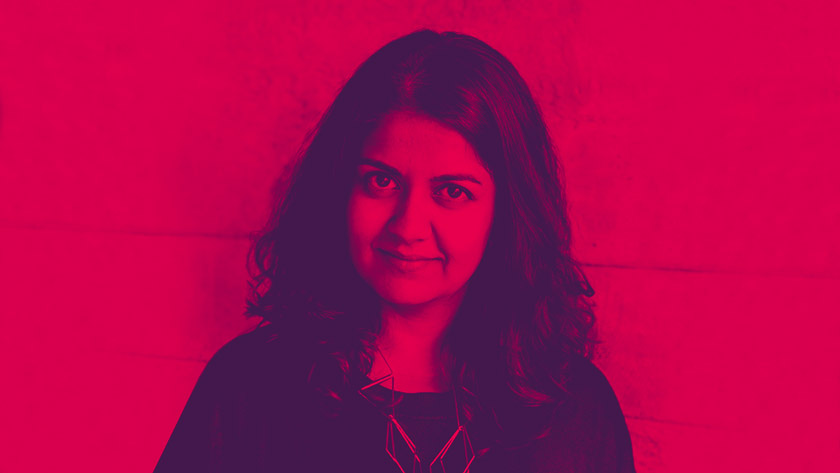

Speakers
Connect with great people… More to come!
Anab Jain
Anab Jain imagines the future for living with her vanguard laboratory, design and film studio Superflux. She inspires and challenges us to look critically at decisions and choices we make, showing us how design can drive powerful insights.
Alan Cooper
“Father of Visual Basic”, author and co-founder of Cooper, he has dedicated decades to the crossroad of design and development, humanizing technology through his groundbreaking work in software design.
General program
The workshops will be announced Late October.
The full program will be announced Late November.
Additional dates: by October 13, we will inform workshop applicants if they have been selected. By November 3, we will inform talk applicants if they have been selected.